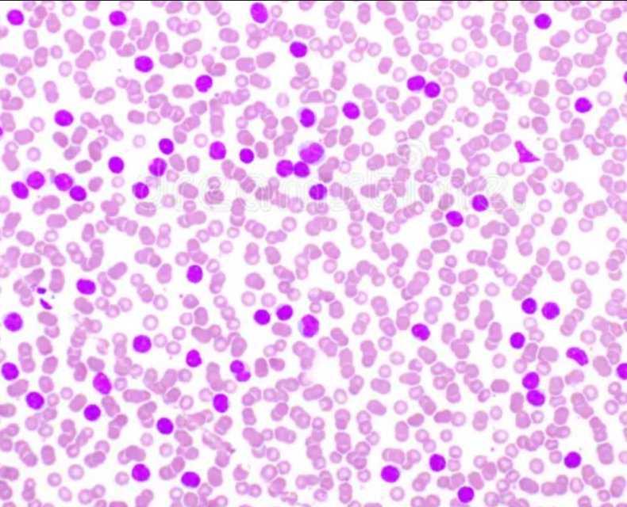
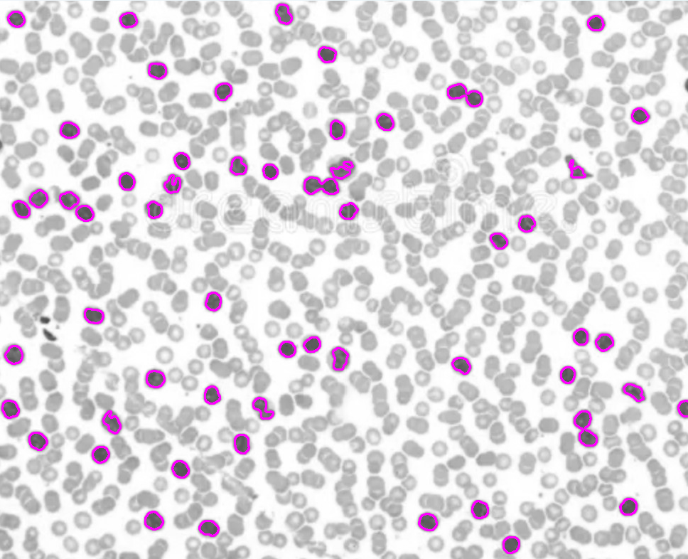

Computer Vision Blood Cell Detection
 Detect and count white blood cells in a sea of red blood cells given a microscopic image of blood!
Cell counting is an extremely important tool for research and diagnosis. A low or high white blood cell count could indicate a number of conditions, such as Hepatitis or Leukemia. This program makes the process of counting white blood cells as simple as possible. Using various image-processing techniques and computer vision, every white blood cell is counted and given a coloured outline for visual clarity.
How it works: Insert your own microscopic image of blood, and let it do the rest. Size parameters can be adjusted based on microscope zoom level.
Python, OpenCV
GitHub Repository